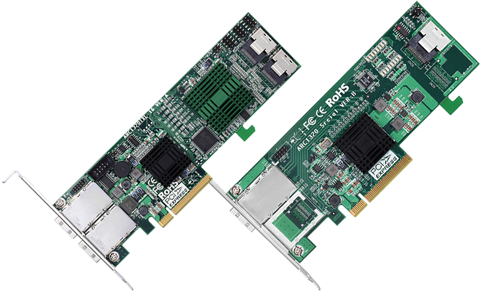

ARC-1320 Series
(PCIe 2.0 6Gb/s SAS Host Adapters)
Product Highlights
✵ PCIe 2.0 x8 lanes ( x8, x4, and x1 lane widths)
✵ Up to 6Gb/s transfer rates per SAS port
✵ Support 1.5, 3.0 and 6 Gb/s SAS and SATA link rates
✵ Connects to SAS and SATA HDDs, tape drives, SSDs
✵ Supports SSP, SMP, STP and SATA protocols
✵ Supports the SATA Protocol defined in the serial ATA, Revision 2.6 specification
✵ Address up to 128 total end-point devices via SAS expanders
✵ API library for customer to write monitor utility
✵ Support SGPIO interface for ARC-1320ix-16
✵ System status indicates through global HDD activity/fault header
PCIe 2.0 6Gb/s SAS Host Adapters
ARC-1320 series host adapters provide ablazing-fast storage connectivity solution with enhanced reliability and performance and a wide variety of internal and external connector configurations to support any application and tiered storage solution. The SAS host adapters enable large-scale direct attach storage (DAS) arrays through external 6Gb/s ports, driving up to 128 end-point devices for SFF-8088 connector. With connectivity options including 8-internal ports, 4-internal/4-external ports, 8-external ports, and 16-internal/8-external ports, ARC-1320 series 6Gb/s host adapters are ideal for large capacity external server storage RAID and no-RAID enclosure.
| ARC-1320 Series 6Gb/s SAS Host Adapter | ||||
| ARC-1320-8i | ARC-1320-4i4x | ARC-1320-8x | ARC-1320ix-16 | |
| Host Bus Interface | x8 lane PCI Express® 2.0 | |||
| Ports | 8 x internal | 4 x internal & 4 x external | 8 x external | 16 x internal & 8 x external |
| Drive Connectors | 2 x SFF-8087 | 1 x SFF-8087 & 1 x SFF-8088 | 2 x SFF-8088 | 4 x SFF-8087 & 2 x SFF-8088 |
| Data Transfer Rate | Up to 6Gb/s per port | |||
| I/O Controller | 88SE9485 | |||
| Devices Support | 128 X 3Gb/s, 6Gb/s and 12Gb/s SAS/SATA | |||
| Physical Dimensions | MD2-Low Profile: 167(L) X 64(H) mm | Low Profile: 214(L) X 64(H) mm | ||
| Direct Attach | Yes | No (Expander onboard) | ||
| Power Dissipation | Typical: 5.52W | Typical: 16.22W | ||
| Operating Temperature | 0 °C to 60 °C with 200 LFM airflow | |||
| Operating Humidity | 10% to 85%, non-condensing | |||
| Brackets | Full height and low profile | |||
| Key Features |
|
|||
Operating Systems
Management Monitor
ArcSAP Storage Manager
McSAS Utility
McBIOS Configuration Utility
Monitors/Notification
Downloads
| File | Version | Date |
|---|---|---|
| ARC-1320 BIOS | 2.0 |
2019/09/06 |
|
NOTE: |
||
| ARC-1320 EFI BIOS | 1.0 |
2012/05/25 |
| ARC-1320ix-16 Expander firmware | 1.16 |
2013/12/25 |